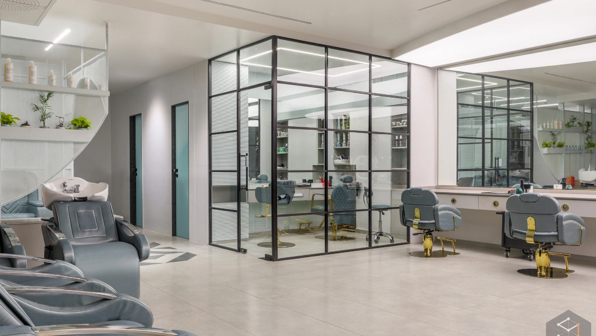

When it comes to hair care, there is no one-size-fits-all solution. Every person's hair is different in terms of texture, thickness, scalp condition, lifestyle, and beauty goals. Yet many people still rely on generic products or follow trends without considering what their hair actually needs. This can lead to disappointing results and recurring hair concerns. Personalized salon services take a different approach. Instead of offering the same treatment to everyone, professional hairstylists carefully assess your hair and recommend customized solutions. This personalized approach can improve the appearance of your hair while also supporting its long-term health.
Personalized salon services are treatments and recommendations designed specifically for your individual hair type, scalp condition, and beauty goals. Before beginning any service, a professional stylist evaluates your hair and discusses your concerns to create a treatment plan suited to your needs.
These customized services may include:
Each service is selected according to your individual needs rather than simply following current trends.
Many people experience ongoing hair concerns because they rely on generic advice or products that aren't suitable for their particular hair type.
Common reasons include:
Using unsuitable products or treatments may provide temporary improvements but may not address the underlying cause of a hair concern.
Persistent concerns may benefit from a professional assessment rather than relying only on general hair care advice.
Professional hairstylists understand that effective hair care begins with understanding the unique characteristics of your hair. During a consultation, they can assess factors such as hair texture, density, moisture levels, scalp condition, and previous treatment history before recommending appropriate services.
This approach can help avoid unnecessary treatments while making salon visits more targeted to your specific needs. Instead of guessing which products or treatments might work, you receive professional guidance based on the condition of your hair and scalp.
Your stylist can carefully examine your hair and scalp to identify concerns such as dryness, damage, dandruff, or excess oil production.
Whether you need a hair spa, conditioning treatment, smoothing service, or scalp treatment, recommendations can be selected according to your hair's condition and goals.
Professional salons can recommend shampoos, conditioners, serums, and hair masks that are appropriate for your specific hair type, helping you maintain your salon results at home.
If you're planning hair coloring, smoothening, or a major haircut, a personalized consultation can help determine the appropriate preparation and care your hair may need before the service.
Your hairstylist can adjust your treatment and home-care recommendations as your hair changes due to weather, lifestyle, or previous salon services.
Every hair type can benefit from professional care that is tailored to individual needs and concerns.
Customized care helps address individual hair concerns while reducing the need for unnecessary treatments.
To maximize the benefits of personalized salon services:
Consistency and professional guidance work together to support lasting improvements in the appearance and condition of your hair.
Personalized salon services focus on your hair's individual needs rather than applying the same solution to everyone. Through professional consultations, customized treatments, and expert aftercare advice, you can address specific hair concerns while maintaining healthier, stronger, and more beautiful hair. Investing in personalized salon care can help you maintain confidence and keep your hair looking and feeling its best every day.